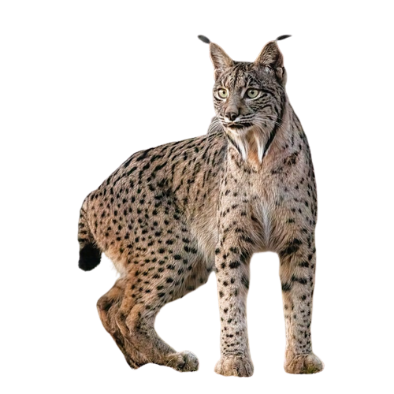

Es un felino de aspecto grácil, con patas largas y una cola corta con una borla negra en el extremo
que suele mantener erguida batiéndola en momentos de peligro o excitación. Sus características orejas
puntiagudas están terminadas en un pincel de pelos negros rígidos que favorece su camuflaje al descomponer la redonda silueta de su cabeza.
También son características las patillas que cuelgan de sus mejillas. Aparecen a partir del año de vida,
cuando apenas cuelgan por debajo de la barbilla y aumentan de tamaño con la edad.
Los machos tienen las patillas y los pinceles negros y más largos que las hembras.
+Info
Lince
